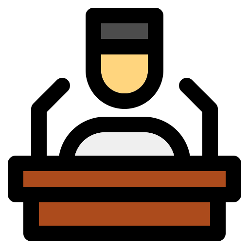
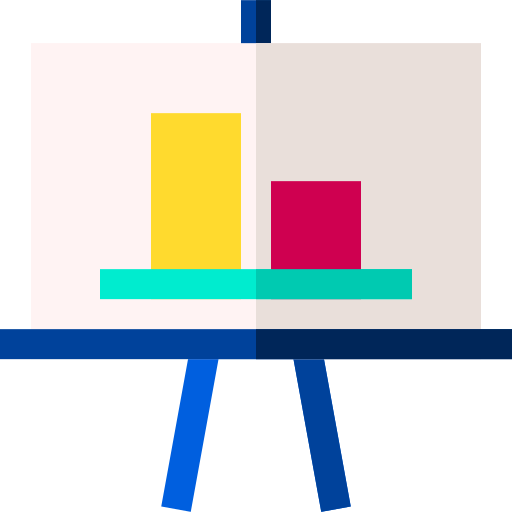
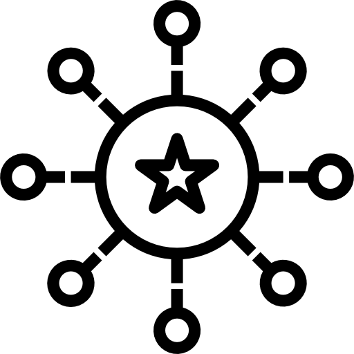

Man Program
-  LectureListen to the speakers from various countries about the messages of sharing and opening
-
G.W.D
ExhibitionAppereciate various creations applying G.w.D license of Web Development,organized from Art Center Nabi. -
 ForumHave the time to share your thoughts and opinions with experts
for each topic.
ForumHave the time to share your thoughts and opinions with experts
for each topic.
- WorkshopTry creating your own work using open source license rather than just watching
- Lgnite Get opportunities to network with G.W.D affiliates around the world,also after the summit.